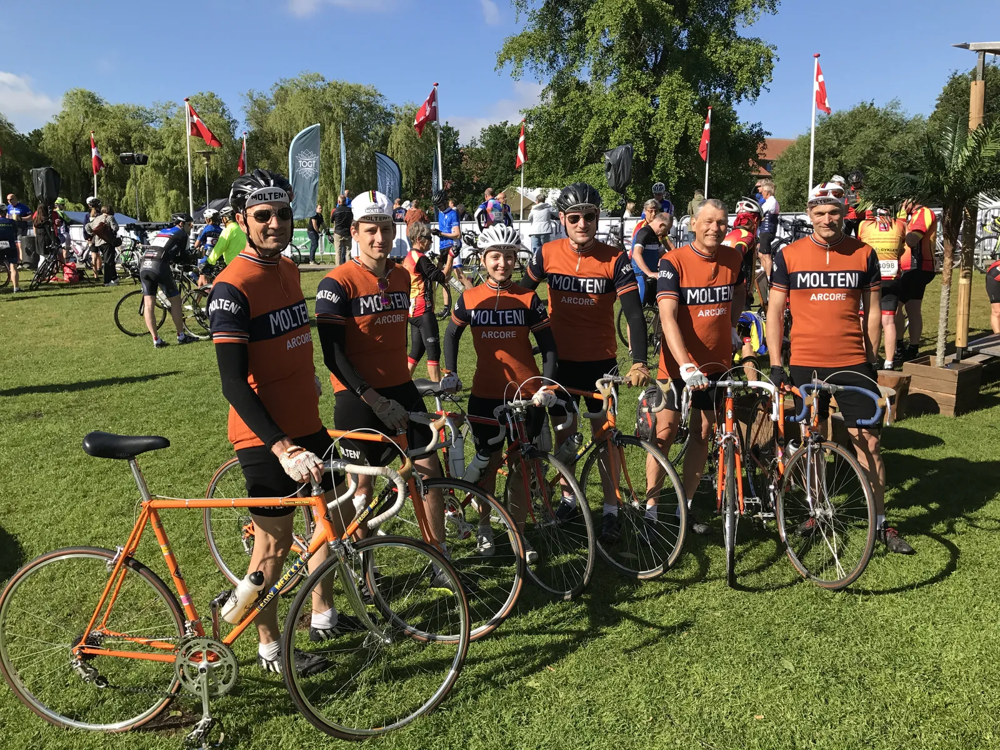
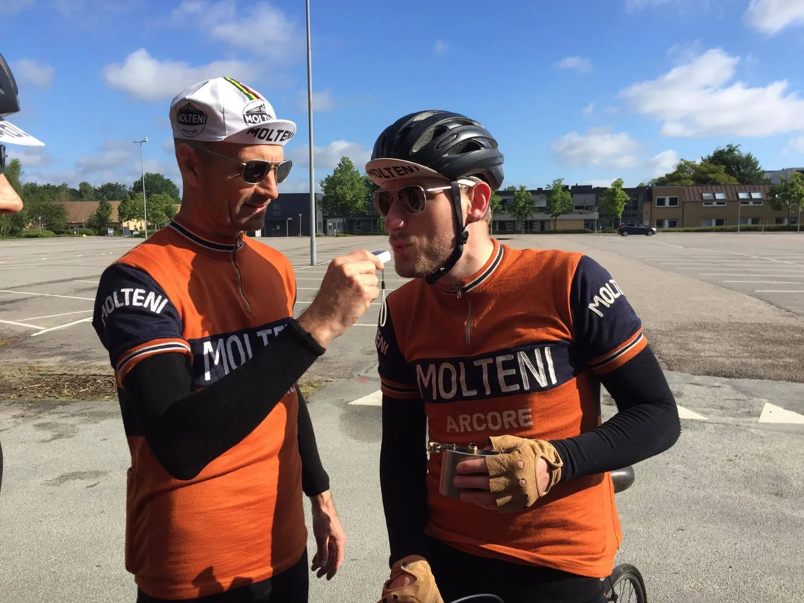
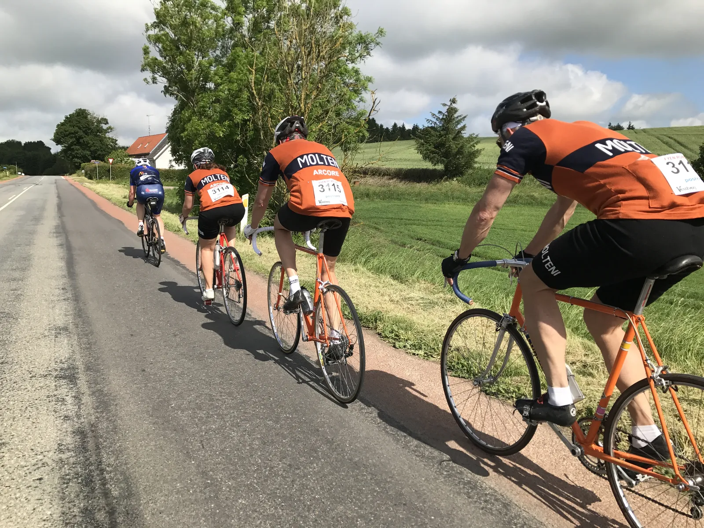
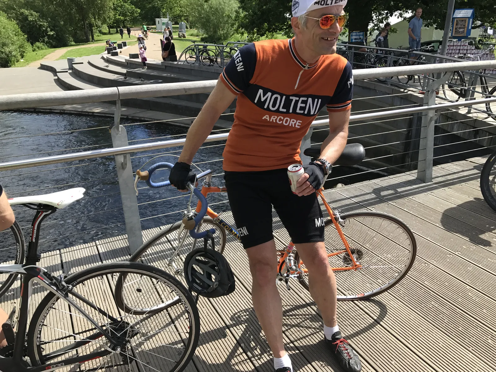
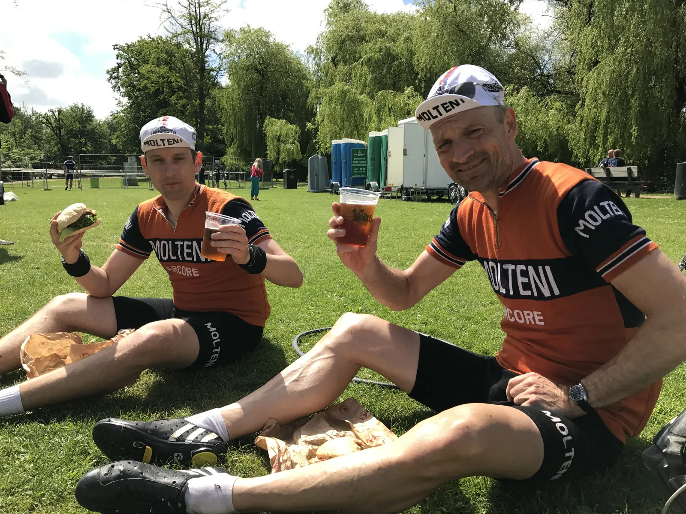
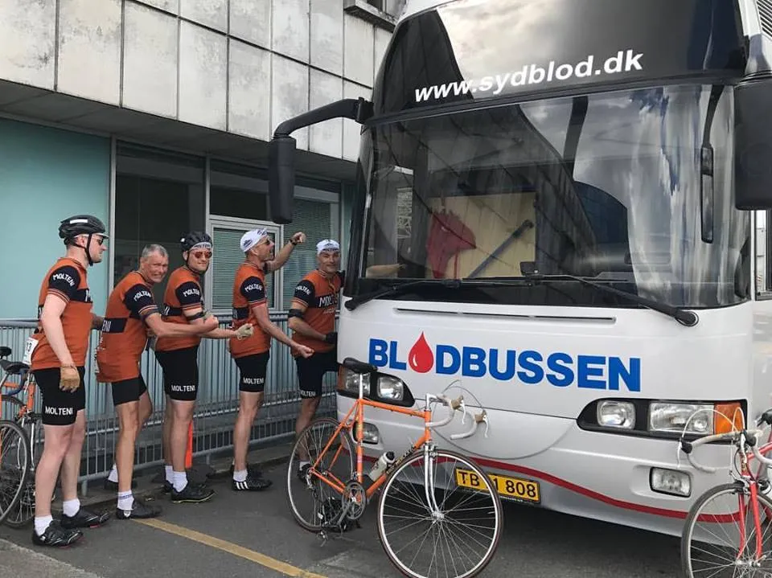

Alkotest, topplaceringer og frisk blod ved Fyen Rundt 2017

På 75 km. distancen blev det til fine placeringer både samlet, og i de individuelle aldersklasser. Det hele startede med alkometer og sluttede med blodtranfusioner.
Squadra Molteni stillede med et 6-mand stærkt hold til Fyen Rundt, og der var høje forventninger. Kaptajn Niels Bjørnsteen blev kørt perfekt i position, og kørte en samlet 4. plads hjem (nr. 2 i H50). Men forinden havde holdet haft en travl formiddag.

Morgenmøde, alkotest og en kasse belgisk øl i en hæk
Kasper Sørensen, Steffan Sørensen, Maria Winther, Carsten Jacobsen, Grane Maaløe og Niels Bjørnsteen var udtaget til at køre Fyen Rundt – 75 km-distancen. Kaptajnen havde indkaldt til morgenmøde på et hemmeligt tidspunkt – på en hemmelig p-plads et sted i Odense inden løbet. Dagens taktik skulle lægges, men taktikmødet blev hurtigt afblæst.
– Jeg have sendt Kasper en tur over til Steffan fredag aften. Kasper skulle have fyldt noget energi i benene. Og til morgenmødet synes jeg, at de begge så noget ramt ud – så jeg måtte lige alkotjekke, om de nu havde fyldt for meget energi på, fortæller Niels Bjørnsteen.
Det havde de dog ikke. Så der kunne godt bevilges en morgenbitter fra lommelærken.

Morgenmødet sluttede af med, at Carsten gemte en kasse specialfremstillede belgiske øl i en hæk. Belgiske øl har nemlig ikke godt af, at stå i en varm bil.
Det orange eksprestog
Starten på det store felt med godt 100 ryttere gik meget stille gennem Odense by. Og selv da motorcykel-marshalls gav løbet frit, var tempoet noget lavt. Grane havde ikke tid til den slags – så han gik i spidsen og satte tempoet op på den rigtige side af 40 km/t. Niels og Carsten fulgte trop – og pludselig var det Det Orange Eksprestog, der trak hele feltet.
Lidt efter kom også Kasper, Maria og Steffan op for at afløse i føringsarbejdet. Men ikke længe efter, blev Steffan akut tørstig. Kasper handlede hurtigt, og gravede dybt i ryglommen – og fandt den blanke lommelærke frem.
Efter 15 km blev tempoet stat yderliger i vejret af 4 velkørende ryttere fra “Trækkerdrengene”. Forceringen splittede feltet og en gruppe på 10 mand slap afsted – heriblandt var Kaptajn Bjørnsteen, der før løbet havde meldt klart ud: Trods det hårde holdløb i torsdags – er der diamanter i benene.
Resten af holdet bakkede af i anden gruppe, og tog endnu en tår af lommelærken. Kaptajnen var jo blevet sendt godt afsted.
Kaptajnens finale
Kaptajn Bjørnsteen lå godt i føregruppen – og tog også del i arbejdet. Men da gruppen ramte Vissenbjerg gjorde det ondt, men han åd sig selv – og kom over med et tab på kun 10 meter til føregruppen, der dog blev kørt ind igen (også takket være et lyskryds). Efter de små og kringlede vejen rundt om Langesø begyndte forberedelserne til finalen i Odense.
– Den blev ret var vild. Det blev angrebet langt ude fra og fra forskellige ryttere, men jeg havde is i maven. Først på de sidste 300 meter lukkede jeg op – og den gamle ræv fik på den meget tekniske opløbsstrækning kæmpet sig frem til en 4. plads, lyder det fra Niels
Længere bagude…
Bliver Kasper, Grane, Steffan, Carsten og Maria presset på Vissenbjerg. På toppen smiler Maria til en lastbilchauffør, som holder tilbage i lyskrydset (og bliver bag Maria de næste 2 kilometer). Rødt lys i et lyskryds, og pludselig er Kasper og Steffan i udbrud fra gruppen. Det skal de få lov at arbejde for, og de næste 5-6 kilometer, bliver der lagt kul på.

Der går splittelse i gruppen, og først ved næste depot er der helt samling igen. Carsten får kort efter defekt. Baghjulet gik på rammen:
“Jeg synes nok det gik lidt stramt”, sagde han efterfølgende, mens han kæmpede med kramperne i græsset.
Grane bruger træningen fra Kiddesvej, og trækker Maria, Steffan og Kasper væk fra resten af gruppen på en lille bakke. Herefter er der nogle rullende bakker, og modvind ind mod Odense. Kasper og Grane tager nogle ordentlige dingerføringer, og Maria og Steffan ligger lunt på hjul. Steffan havde lige samlet sin orange Molteni-racer aftenen før, og havde ikke været på cyklen siden Kongeetapen sidste år.
Spurt og veltimet punktering
Mens Niels nyder Jolly, så er det Grane’s tur til at sætte tingene på plads i 2. gruppe. Han tager en sikker spurtsejr, og Kasper, Maria, Steffan og et par minutter senere Carsten, kommer ind i højt humør.

Grane stiger af cyklen, og mens han hviler kropsvægten på overrøret, punkterer baghjulet.
Jeg filer mine slanger ned i en tykkelse, der kun lige holder løbet ud. Det sparer 0,7 gram, fortæller Grane.
Burger og fadøl

Fyen Rundt er (normalt) lig med store burgere, Jolly colaer og fadøl. Det var også næsten det samme denne gang. Det klassiske løb havde lavet store ændringer: Start og mål var flyttet, ruterne er længere, de gav kun én burger og den lyse fadøl var skiftet ud med en mørk.
Frisk blod til holdet

Det har været et hårdt forår for Squadra Molteni. Der har været kørt en del løb – og specielt holdløbene slider holdets ryttere. Derfor havde Squadra Moltenis holdlæge Finn Birk lavet en aftale med vores serbiske chauffør, der holdt klar ved Odense Universitets Hospital efter løbet.
Blodet der blev sprøjtet ind i rytternes åre havde en alkoholværdi på 60%.
– For at restitutionen skal virke optimalt, så skal der kulsort belgisk øl til i rigelige mængder. Det er meget hurtigere at sprøjte nyt alkoholiseret blod direkte ind i årene, end at indtage det gennem mavesækken. Specielt efter en stor fed burger. Derfor var det helt perfekt at Sergey Slavko, kunne køre bussen i position, udtaler holdlæge Finn Birk.
Resultater
- Kaptajn Niels Bjørnsteen, samlet nr. 4 – og 2. plads i H50
- Maria Winther, samlet 4. plads hos kvinderne – og vinder i D30
- Grane Maaløe, samlet nr. 19 – og 3. plads i H40
- Kasper Sørensen, samlet nr. 24 – og 3. plads i H30
- Steffan, samlet nr. 25
- Carsten Jacobsen samlet nr. 32 – og 3. plads i H60Der var 288 til start på 75 km distancen.